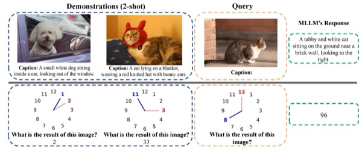
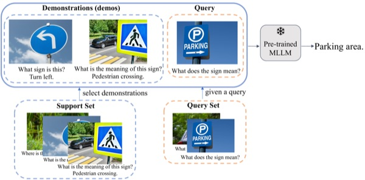
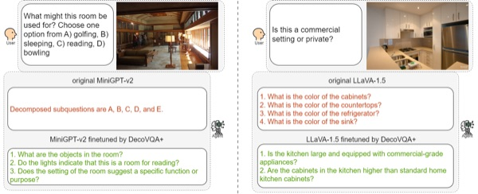

Jianzhe Liu
PhD Student
MuMoL Group,
Chair for CVAI, Technical University of Munich
Member of MCML ·
Supervised by Dr. A. Sophia Koepke
I am a PhD student at the Chair for CVAI, Technical University of Munich, working with the MuMoL group under the supervision of Dr. A. Sophia Koepke. My research centers on multimodal learning across text, video, and audio, with a focus on how models can perceive, reason about, and learn from context across these modalities. Before starting my PhD, I completed an M.Sc. in Informatics at the Technical University of Munich.
Research interests: Multimodal Learning (Text, Video, Audio), Vision-Language Models, Large Language Models, In-Context Learning.
News
- Oct 2025Started PhD studies in the MuMoL group under the supervision of Dr. Sophia Koepke.
- Jul 2025Paper accepted to COLM 2025.
- Oct 2024Paper accepted to WACV 2025.
- Sep 2024Paper accepted to Findings of EMNLP 2024.
Publications


Visual Question Decomposition on Multimodal Large Language Models
Findings of the Association for Computational Linguistics: EMNLP, 2024